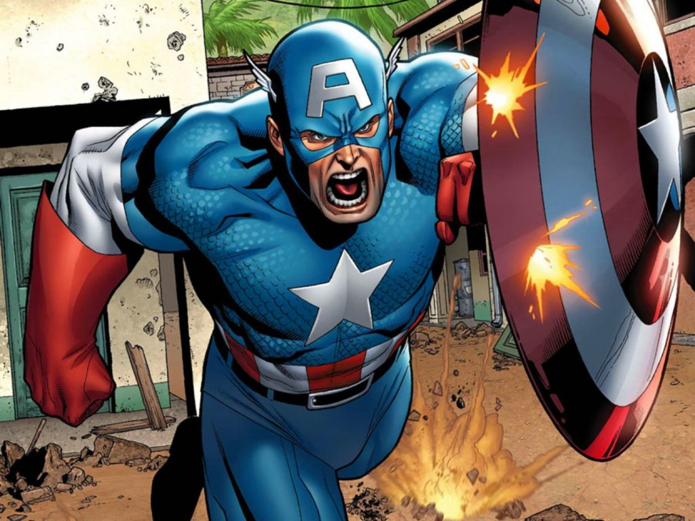

Curiosidades sobre o Capitão América

- Capitão America é um super-herói criado por Joe Simon e Jack Kirby. Sua primeira aparição foi em Captain America Comics #1 (Março de 1941). Ele foi considerado um símbolo americano durante a Segunda Guerra Mundial e foi um personagem bastante importante para a Timely Comics, a antecessora da Marvel Comics que conhecemos hoje. A popularidade dos heróis diminuiu após a guerra e o personagem voltou em 1964 para como participante do Universo Marvel.
- Capitão America possui força e agilidade sobre-humanas, estratégia de combate, tática de guerrilha e é mestre em lutas corpo a corpo.
Para saber sobre o Homem Aranha, clique
aqui